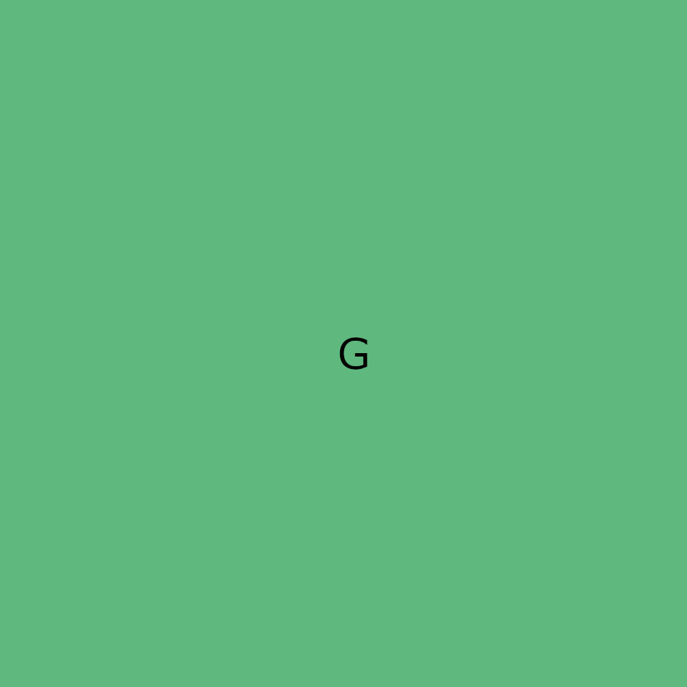

Hoje vamos falar sobre Imagens Dinâmicas
Elemento <picture>
Tente abrir este site em vários dispositivos diferentes ou simplesmente
aumente e diminua o tamanho da janela do navegador.
Vamos utilizar a tag <picture>:

🔍 Passo a passo para usar imagens dinâmicas com <picture>
- Organize suas imagens: Crie versões da imagem em tamanhos diferentes (ex.: pequeno, médio e grande).
- Renomeie corretamente: Use nomes simples, sem espaços e sem acentos (ex.: foto-p.png, foto-m.png, foto-g.png).
- Use a tag <picture>: Ela será o container para definir as condições de exibição.
- Dentro de <picture>, adicione <source>: Cada <source> define um tamanho de tela usando
media="(max-width:...)".
- Coloque uma tag <img> no final: Esta é a imagem padrão, exibida se nenhuma condição dos <source> for atendida.
- Teste: Diminua e aumente o tamanho do navegador ou acesse por celulares, tablets e PCs.